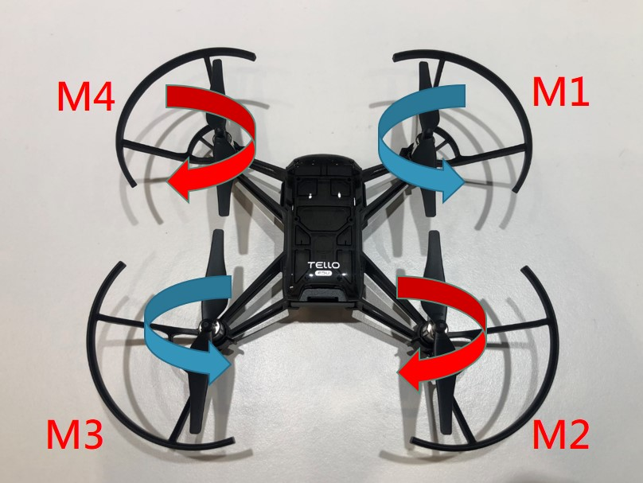

無人機的運動
無人機的運動看起來相當複雜，因為它有四個或更多的馬達來實現所有運動，但實際上它非常簡單而直觀。無人機可以四個自由度移動，這表示它可以在三個方向(上下、左右、前後)上平移並在一個方向上旋轉。如前所述，我們四軸飛行器的兩個螺旋槳沿順時針方向旋轉，另外兩個沿逆時針方向旋轉，這會產生零角動量，使無人機保持靜止而不是沿一個方向旋轉。無人機的運動之一稱為相位平移運動(上升/下降)，我們若以相同的速度運行所有馬達，這將產生大於無人機重量的升力，這將導致無人機向上移動。如果我們想下降，我們將降低所有馬達的速度，使升力小於無人機的重量。如果我們想懸停在空中，我們將改變馬達的速度，使升力等於無人機的重量，這將使無人機能夠懸停在地面之上。讓我們來談談左右平移運動，如果我們想向左移動，我們將降低左側馬達的速度並增加右側馬達的速度。為了向右移動，我們將降低右側馬達的速度並增加左側馬達的速度。類似地，前後平移運動可以通過降低前馬達的速度並增加後馬達的速度來前後移動。 為了向後移動，可以降低後馬達的速度並增加前馬達的速度。由於兩個馬達順時針旋轉，另外兩個逆時針旋轉，我們可以利用這些知識來旋轉我們的無人機。要順時針旋轉無人機，我們將降低順時針移動的馬達速度並增加逆時針移動的馬達速度。同樣，如果我們想逆時針旋轉，我們將降低逆時針馬達的速度並增加順時針馬達的速度。(資料來源：盧以詮博士- Tello_EDU_RMTT_Programming講義)
升力(Lift)大於重量(W) ，物體就會不斷向上飄。升力(Lift)剛好等於重量(W)，物體飄浮。升力(Lift)變作零，重量就會將他物體拉回地面。
Tello EDU教育型無人機簡介
市面上有許多出色且價格不高的教育型無人機，顧名思義是為教育目的而打造的。除了價格親民外，同時也提供可用於自行構建和編碼所需的軟件開發套件(SDK)。因此，無論是想在家中、在教室中還是在大學課程中學習，都有許多無人機可供使用者選擇。 而我們使用的這款Tello EDU教育型無人機，是一款帶有一個攝像頭的緊湊型(compact)無人機，可以拍攝高達720p的視頻，每秒 30 影格/幀 (FPS)，因為它具有多種安全功能，所以在室內使用非常容易和安全。它由目前世界市 占率最高的無人機公司DJI大疆創新所生產。Tello EDU迷你無人機擁有先進的飛控技術，使其能提供精確穩定的飛行，為此DJI開發兩款名稱為Tello和Tello EDU 的APP，讓使用者可利用智慧型手機或平板電腦進行藍芽或Wifi連線，搭配彩色的使用介面和視覺化程式設計功能，簡化了操作的難易度，為想入門操作無人機的消費者，提供了理想的選擇。Tello EDU是一款益智編程無人機，支援Scratch圖像化程式設計、Python和Swift等編程語言，且開發者提供SDK2.0，除了可讓使用者漸進式學習程式語言，也能讓學習者在撰寫程式的過程中創造更多可能性。 Tello EDU擁有支援多機編隊的功能，能夠指揮2部以上的Tello EDU編隊飛行，可結合為Tello EDU設計的教具「任務挑戰卡」，編寫code讓Tello EDU識別任務挑戰卡，教它完成自己想要的動作，例如發送指令指揮飛行器畫出心型、星型等難度特技動作，進行單機或多機的趣味藝術表演，在玩樂的過程更生動有趣，也提升程式設計的技能。此外，Tello EDU開放相機影片串流數據，可讓使用者有效運用機器視覺和深度學習等近期技術，為Tello EDU在影像處理和人工智慧領域(物體識別、目標跟隨、3D重建)，大幅開創應用的彈性空間。